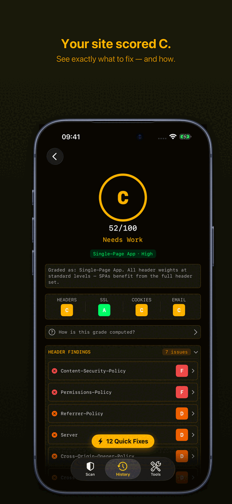
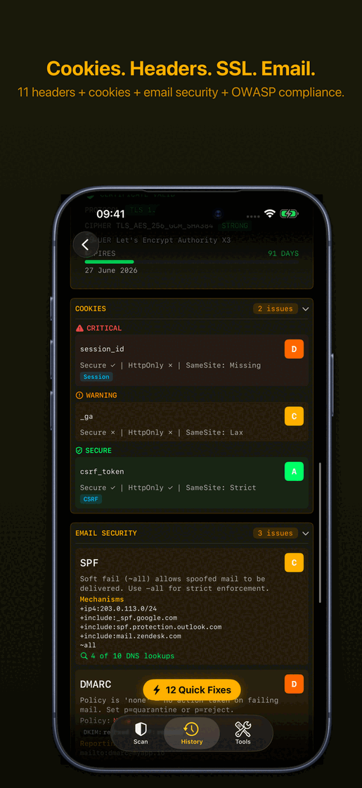
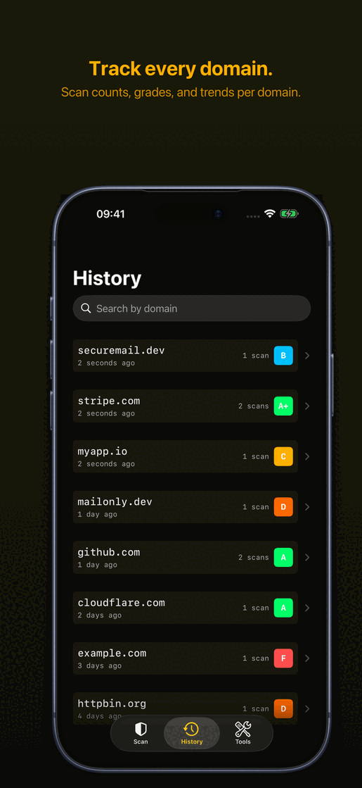
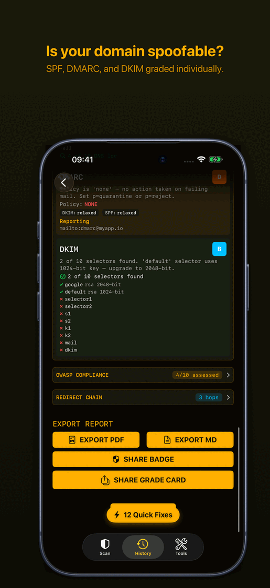
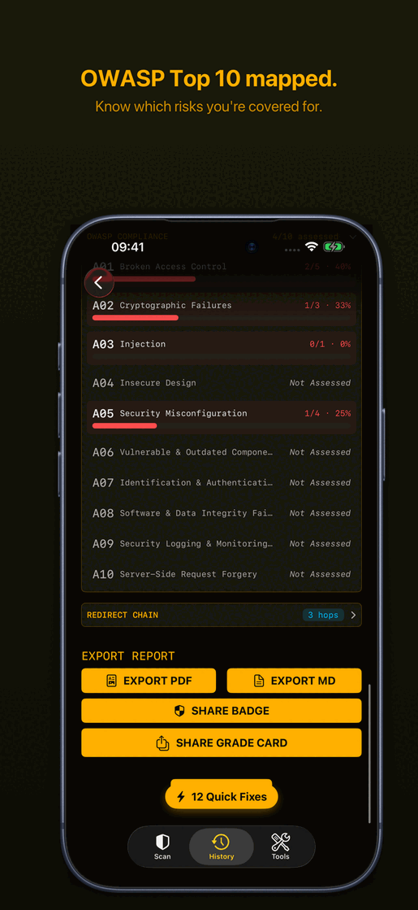
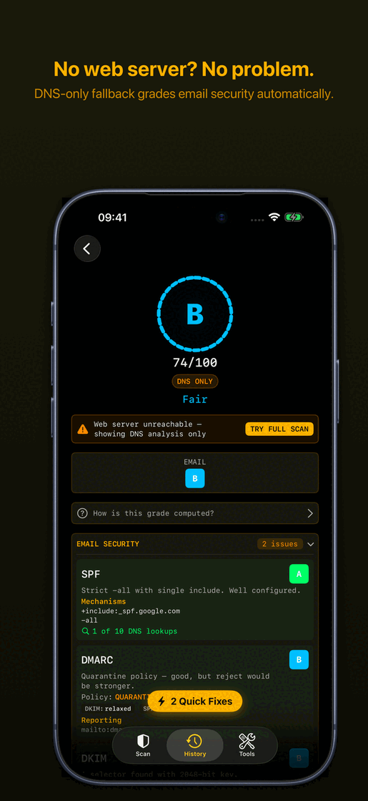

URL Scan
Enter any URL and get a context-sensitive security grade in seconds. Your site type is detected automatically.
GuardPad adapts your security grade to your site type. A blog isn't judged like a banking app. Analyze headers, SSL/TLS, cookies, email security, and OWASP compliance — all from your pocket.
Professional-grade security scanning tools, designed for mobile.
Enter any URL and get a context-sensitive security grade in seconds. Your site type is detected automatically.
Analyze 11 security headers with site-type-aware weighting. CSP depth scoring, HSTS, COOP, COEP, CORP, and more.
Grade SPF, DMARC, and DKIM individually. Detect spoofable domains with actionable DNS fix snippets.
Grade cookie security: Secure, HttpOnly, SameSite, __Host- prefix, and session hygiene.
Check certificate validity, expiration, and cipher suite strength.
Map every finding to OWASP Top 10:2025 categories. Know which risks you're covered for.
Query all record types. DNSSEC validation, CAA grading, and DNS-only fallback for unreachable servers.
Impact-sorted issues with server-specific code snippets for nginx, Apache, Express.js, and Caddy.






Grades now adapt to your site type. A static blog isn't held to the same standard as a banking SPA. Five types detected automatically: static, SPA, API, CMS, and generic.
SPF, DMARC, and DKIM records graded individually. Detect spoofable domains and get DNS fix snippets.
Every finding mapped to OWASP Top 10:2025 categories. See per-category coverage with compliance bars.
When a web server is unreachable, GuardPad automatically analyzes DNS records and delivers a partial security grade. Works for mail-only domains.
See exactly what changed since your last scan with inline grade change badges. Share amber-themed grade cards.
DNSSEC validation status and CAA record 4-tier grading. Trusted Types CSP detection with A+ grade boost.
One-time purchase. No subscription.
$5.99
One-time purchase